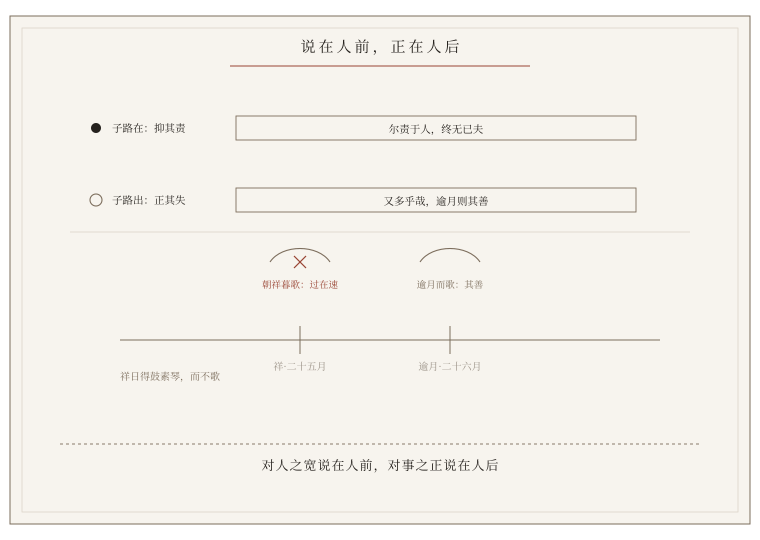

檀弓上 · 三·十五 · 第 218 课
鲁人朝祥而暮歌，子路笑之。夫子曰「由，尔责于人，终无已夫！三年之丧，亦已久矣夫」。子路出，夫子曰「又多乎哉！逾月则其善也」。注「笑其为乐速」「又，复也」。
说什么事：对已过之人宽一分，对礼之正说一分。
落在哪一层：礼，兼及礼意与施礼之术。论「抑」与「正」分施。
为何编在此位：上节论人子处父之难，此节论待人处礼之难。二者皆在分寸上。
【经】魯人有朝祥而莫歌者，子路笑之。夫子曰：「由，爾責於人，終無已夫！三年之喪，亦已久矣夫。」子路出，夫子曰：「又多乎哉！踰月則其善也。」
【注】朝祥莫歌，谓祥之朝而暮歌也。笑其为乐速。由，子路名。尔责于人，终无已夫，怪其言之无已。三年之丧，亦已久矣夫，言人之为哀，已以久也。又，复也；多，犹过也。
【疏】此一节论丧礼祥日歌哭之节。祥谓二十五月大祥，歌哭不同日，故朝祥而莫歌也。「夫子曰由尔责于人终无已夫」者，子路笑之，故抑之。「三年之丧亦已久矣夫」者，言三年之丧，人子所哀，已亦已久，何足复责之。「子路出夫子曰又多乎哉」者，言此人之过，又复多乎哉，言其过少，不复多也；「逾月则其善也」者，祥后复一月，是二十六月，则可以为歌，是其善也。祥之日得鼓素琴，但不歌耳；《丧服四制》云「祥之日鼓素琴，告子姓以有终」，是祥日琴而不歌；不讥弹琴而讥歌者，琴以手、笙歌以气，手在外而远，气在内而近，故讥歌不讥琴也。
祥 注「谓祥之朝而暮歌也」。二十五月大祥。
莫 暮。朝祥而暮歌。
终无已夫 责人没个完了。
又 注「复也」。
逾月 再过一月，即二十六月。
鲁国有个人，早晨行了大祥之祭，到晚上就唱起歌来。子路笑他。夫子说：「由啊，你责备人，真是没个完了！三年之丧，也够久了。」子路出去后，夫子说：「（这人的过）又有多重呢！再过一个月就唱，那就好了。」
此节一句话说两次，两种说法。当子路在时，夫子抑之——不是这人对，而是你不该一直责人。子路出去后，夫子正之——这人的过并不算重，若能再等一月便好了。同一件事，同一人，前后两端：一端对「责人者」，一端对「事之正」。夫子不因护人而废礼，也不因守礼而伤人。
第一层 先抑其责 「尔责于人，终无已夫」。此句的对象不是犯错者，是责备者。夫子先说这句，是因子路之笑本身也是一种过——以礼责人而失于苛，亦非礼。
第二层 后正其失 子路出，夫子才说「又多乎哉！逾月则其善也」。注「多，犹过也」。此句是给事一个正解：祥而暮歌，过在速；逾月而歌，则合。先生不否认其过，只衡其过之轻重。
第三层 琴可而歌不可 疏辨析极细：祥之日得鼓素琴，但不歌。为何讥歌不讥琴？「琴以手，笙歌以气；手在外而远，气在内而近」。同一日，用手者尚可，用气者不可。此说未必是礼之本义，但它显出一种细腻：礼把「哀之深浅」量到了发声的远近上。
第四层 抑与正之序 此节最要者，是说话的次序：当着人抑其责，背着人才正其事。次序一乱，便要么伤了责备者，要么废了礼之正。
与今日何干 凡规劝，最忌在大庭广众之下把人说透。此节所示：对人之宽要说在人前，对事之正要说在人后。两者都要，缺一不可。
| 左 | 右 |
|---|---|
| 朝祥而莫歌 | 大祥之朝行礼，暮即歌 |
| 子路笑之 | 笑其为乐速 |
| 尔责于人，终无已夫 | 先说责备者之过 |
| 三年之丧，亦已久矣夫 | 哀已已久，何足复责 |
| 子路出 | 背着人才正其事 |
| 又多乎哉 | 其过又有多重 |
| 逾月则其善 | 二十六月而歌则合 |
| 祥日鼓素琴而不歌 | 琴以手，歌以气 |
画一间简朴的士人之室，视点略高，一日之内两个时刻并置。左侧：天光初白，室内一张素琴横放在矮几上，琴侧一间空着的席位，席上尚留一块旧缟（白色粗帛）折叠整齐，无人。右侧同一屋内，天光已暗，一盏小灯点在席旁，席上无人，只有一只空的酒器。左右以一道浅色的墙缝相隔，示朝与暮。两处皆无歌声之形，只在右侧地面上画出一小片散落的竹简（似方才随手放下）。不写文字、不画人。赭色只用在左侧琴身的雁足与右侧灯的灯芯上。
